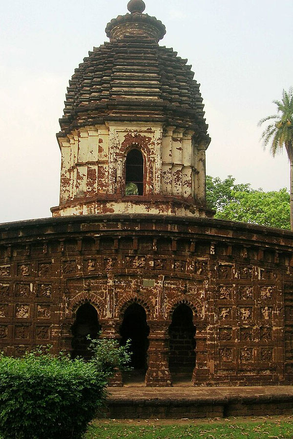
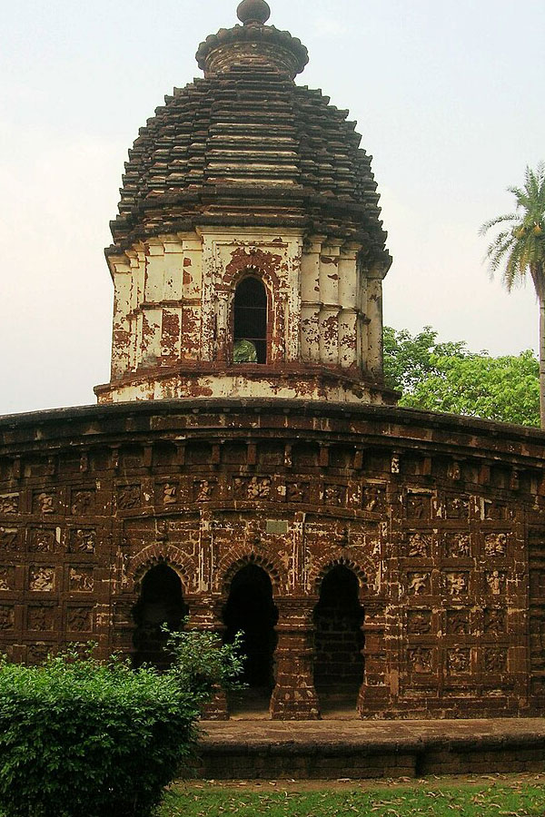
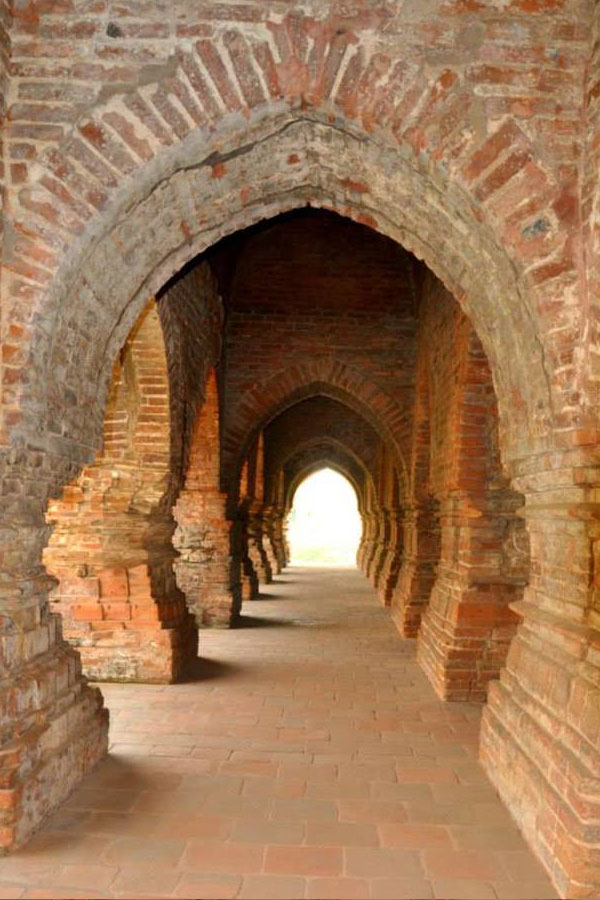
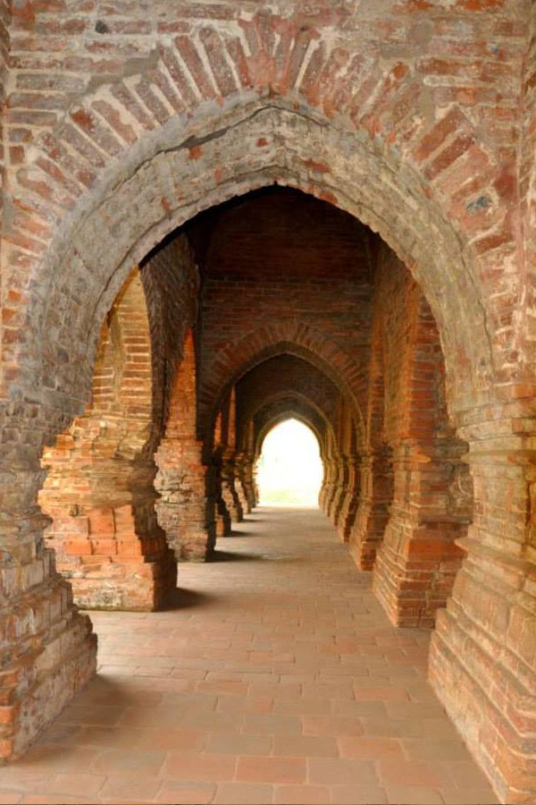

বিষ্ণুপুর
Bishnupur is a historical and cultural treasure trove, known for its terracotta temples, ancient architecture, and traditional crafts. Here are some of the top tourist spots to explore in Bishnupur:


Bishnupur, the temple town in the Bankura district of West Bengal is welcoming you with its lavish heritage, proud culture, brilliant architecture and tales of terracotta. Adi Malla established the Malla dynasty. Jagat Malla, the 10th Malla king shifted his kingdom to Bishnupur. Due to short supply of stone in Bengal, burnt clay bricks came as a substitute and architects of Bengal found the new way of a beautiful craft known as ‘Terracotta’. During the seventeenth century, the art of terracotta reached its highest peak. Raja Jagat Malla and his descendants built numerous temples made of terracotta and stone art.
Plan your holiday destination in this serene place that is world-famous for its ‘Baluchari’ saree and various forms of artifacts. Explore a town that speaks the language of terracotta. Live in the rich essence of Hindu mythology amidst innumerable architectural structures with majestic footprints of terracotta artwork. The variety of temples, whispering history and enchanting art-forms will surely give you goosebumps.
1. Rasmancha Rasmancha, the oldest brick temple was established by the King Hambir in 1600 AD. The majestic temple is architecturally so unique and unparalleled that it is one of its kind in the whole Bengal as well as the country. Rasmancha proudly stands on a laterite plinth and owns a single chamber neighbouring hut shaped turrets along with an elongated tower. You will get to witness a heritage that is enthroned with a pyramidal superstructure and is blessed with three circumbulatory galleries, tranquil pillars and mysterious arches with terracotta lotus motif. In the presence of daylight, when you will be walking through the galleries, you will feel history whispering in your ears by the language of light and shade. In the dark, glowing lights from the monument makes a thrilling ambience.
2. Mrinmoyee temple Mrinmoyee temple, the oldest temple of Bishnupur was established by King Jagat Malla in 997 AD. According to local history, Maa Mrinmoyee ordered the king in his dreams to build the temple. Goddess Durga is worshipped here as Maa Mrinmoyee. Although the temple had to be reconstructed, the idol made of Ganga clay remained same. Experience the oldest Durga Puja of Bengal (1021 years) and rich heritage immersing into a different flavor of religious warmth during the Puja. The festival starts with the worship of “Baro thakurani”, “Mejo thakurani” and “Choto thakurani” respectively, after setting up of a clay pot or “Ghat”. On the sacred moment of “Mahastami- Sandhipuja”, a cannon is fired and then vegetables are sacrificed.
3. Jorbangla Temple Jorbangla temple was established by Malla king Raghunath Singh in 1655. The temple is one of the exceptional examples of the terracotta art of West Bengal and owns a unique architectural structure. The temple is named as “Jorbangla” because of its special “Do Chala” shape. The temple has its roof along with double-sided curved thatch, known as porch and shrine respectively, joined together. See the detailed sculptures of terracotta portraying multiple scenes from Mahabharata, Ramayana, Krishna’s childhood on its walls and get amazed. The panels decorated with terracotta-tales beautifully depict epic scenes like ‘Bhisma’s Sarasajya’, ‘Marriage of Ram-Sita’, ‘Maa Parbati with her two sons’, ‘Balgopal’s activities’, ‘story of Laxman and Surpanakha’ and many more.
4. Shyam Rai temple The temple was built by King Raghunath Singh in 1643, is popularly known as ‘Panch-chura’ temple as it owns five pinnacles. The temple looks beautiful with triple arched passage on its four sides. It is one of the star attractions of Bishnupur because of its breathtaking terracotta art-forms on both interior and exterior panels. Various scenes based on religious stories like ‘Indra fighting sitting on Oirabot’, ‘Saga of Ram and Raban’,’Glimpses of Krishna Lila’, ‘love of Radha-Krishna’, ‘Hunting scenarios from old society’ etc. are truly representing the terracotta art at its best. Another attraction of this temple is a giant Raschakra that depicts various forms of ‘Radha-Krishna Lila amidst of Gopinis’.
5. Gar In Bishnupur, there are two proud gateways to the fort. Local people addressed them as ‘Gar Darja’. Beside ‘Murcha Hill’, you will see a small mound made of stone. After crossing the small gate, there comes a gigantic gate that was the entrance of the Bishnupur Royal Kingdom. ‘Gar Darja’ was made to protect the royals from enemies. It has a huge terrace and secret chambers. Soldiers used to keep track trespassers from the ‘Gar’ and made surprise attacks to smash them.
6. Madanmohan Temple When you are in Bishnupur, this one pinnacled ‘Bishnu’ temple is a must see. Certainly, the temple is one of the main structural forms carrying the message of finest terracotta art in its body. Malla Raja Durjan Singh Dev established the temple in the name of Lord Madan Mohan in 1694. This is an active temple, till date.
7. Jore Shreni Temple / Poramatir Haat Area Though known as Jor Mandir (meaning pair of temples), it is actually a complex of three Eka-Ratna temples: Two big temples of same size and a small one. These temples were built by Malla King Krishna Singh (pronunciation: sing-ho) in 1726. These ‘Eka-Ratna’ or ‘single towered’ temples are made of rust-coloured laterite. The big temple has a square base of 11.8m X 11.8m and a height of 12.8m above a low platform. The roofs of all three temples are typical Bengali ‘chala’ type surmounted by a ‘sikhara’ or tower. Around the innermost sanctuary where the idol is kept, there are covered porches on three sides. Except the rear wall, on each of these three sides there are three arched openings.
8. Archeological Museum Acharya Yogesh Chandra Purakirti Bhawan is the local Museum in Bishnupur and is a must see for people who love archeology, art and history. You will get to see around 100 sculptures from the 10th-12th century, near about 5000 manuscripts, different types of folk arts, photographs, irreplaceable specimens of textiles and many more ancient items.
9. Lalbandh – History remains in water Bir Singh built the seven lakes named Pokabandh, Shyambandh, Kalindibandh, Jamunabandh, Gantatbandh, Krishnabandh, and Lalbandh in 1658. Lakes were made for drinking water and to protect the town from enemy. Malla Raj Raghunath Singha is said to be infatuated with a Persian dancer, called Lalbai. He took her under his protection and later dug this large pond in her name Lalbandh.
10. Sareswar and Saileswar Temple These twin temples are dedicated to Mahadev and located in the village of Dihar which is 8 km distant from Bishnupur. You will see a Nandi Bull seated at the entrance of the Sareswar Temple as if it is protecting it. These temples, made of laterite stone, are majestic examples of Oriya Deul style architecture. This place becomes a pilgrimage during ‘Mahashivratri’ festival and ‘Gajan’.
Bishnupur
 



 
